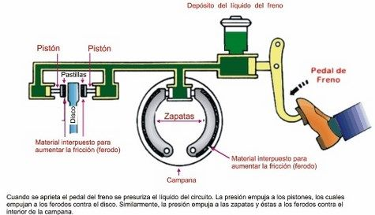

sistema de frenos

Información:
Permite detener o disminuir la velocidad del vehículo de forma segura. Hay frenos de disco y tambor. Sus partes principales incluyen: pastillas, discos, cilindro maestro, líquido de frenos y sistema ABS (frenos antibloqueo).